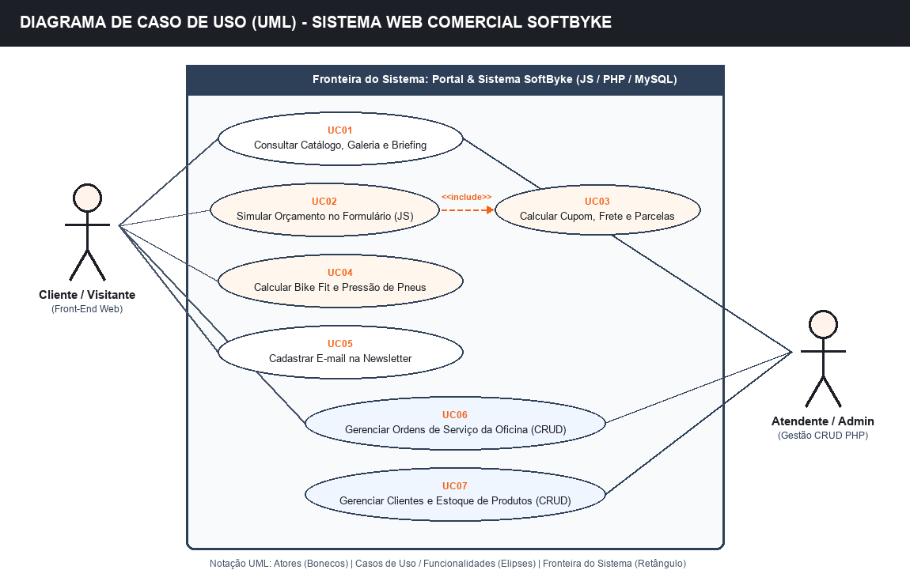
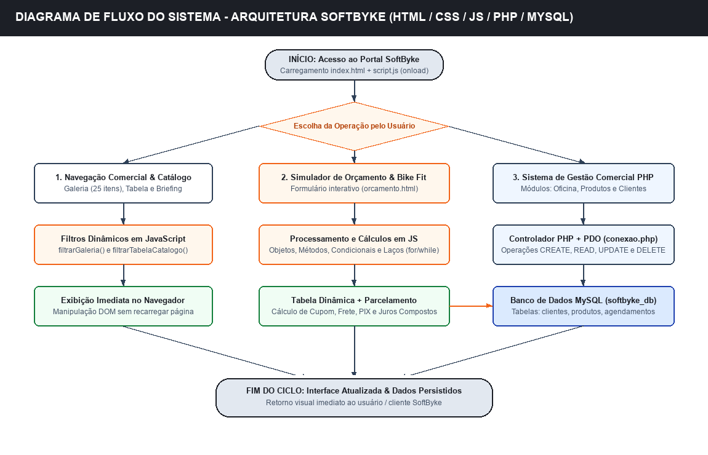
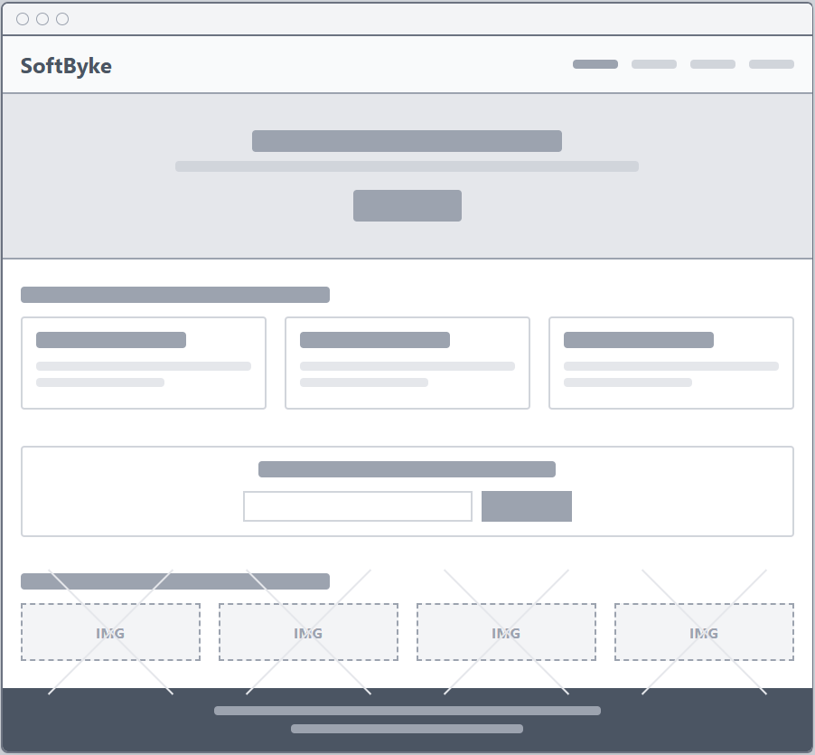
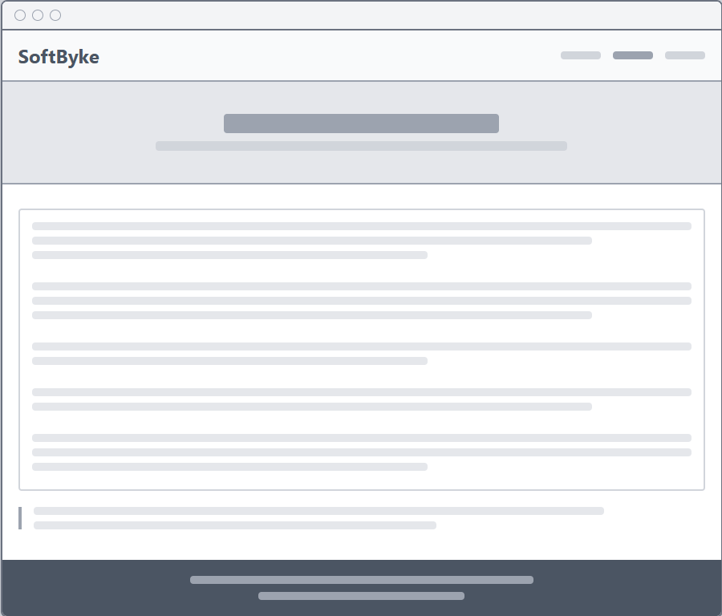
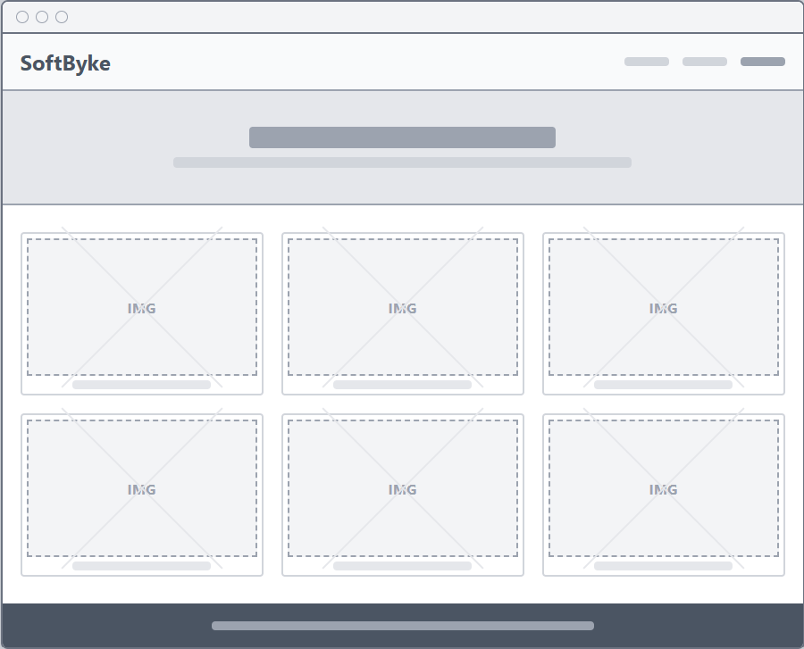
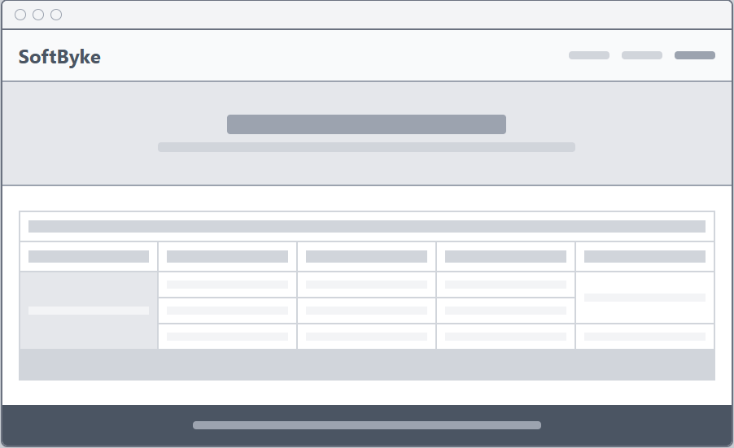
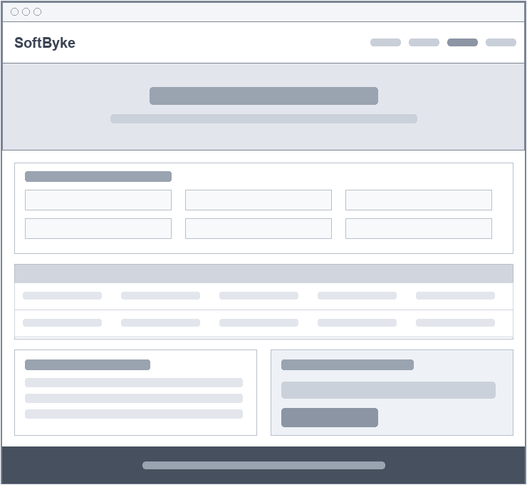
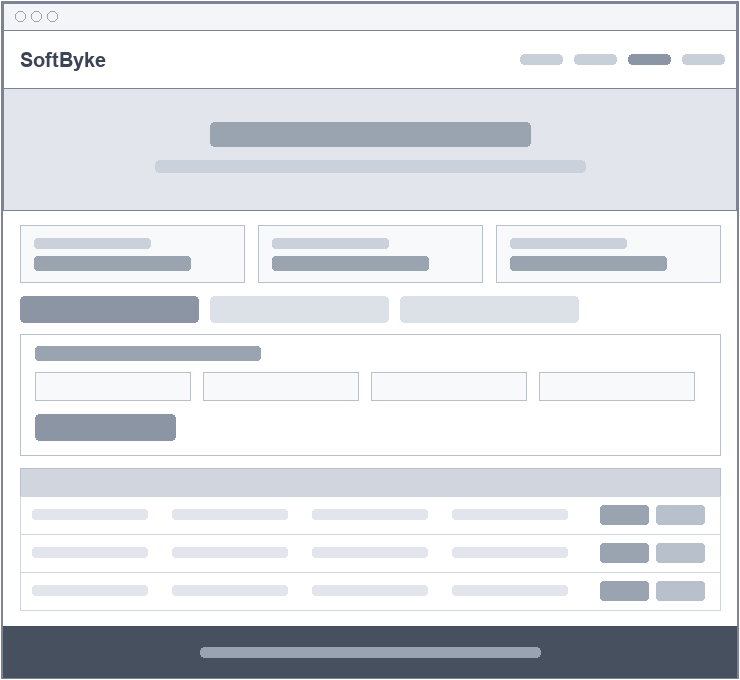
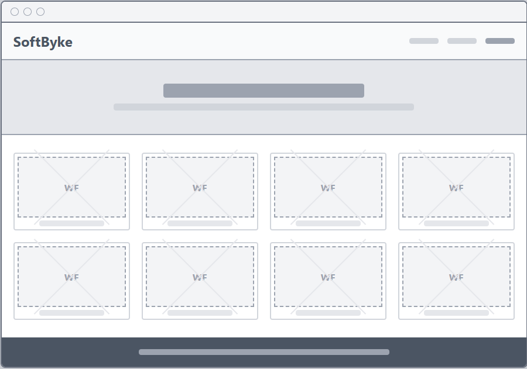
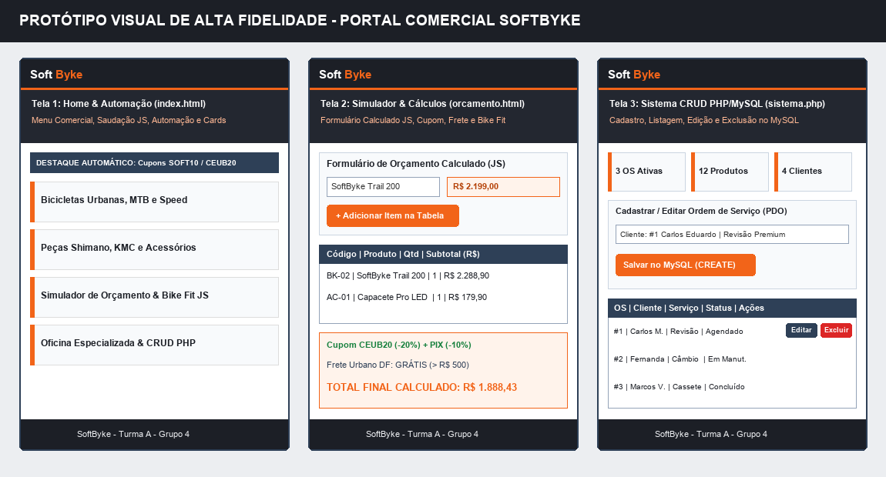

1. Diagrama de Caso de Uso (UML)
Representa as interações entre os atores (Cliente / Visitante e Atendente / Administrador SoftByke) e os casos de uso do sistema web.

2. Diagrama de Fluxo do Sistema
Demonstra o fluxo operacional de navegação, simulação de orçamento em JavaScript e persistência CRUD em PHP e Banco de Dados MySQL.

3. Wireframes das Páginas do Projeto
Rascunhos estruturais padronizados de todas as telas implementadas no portal comercial SoftByke:

1. Página Inicial (Início)

2. Empresa (Briefing)

3. Galeria de Produtos

4. Catálogo & Preços (Tabela)

5. Simulador de Orçamento (JS)

6. Sistema Comercial CRUD (PHP/MySQL)

7. Documentos e Artefatos
4. Protótipo de Alta Fidelidade
Visualização final do projeto implementado em conformidade com o design planejado no Figma / protótipo visual.
